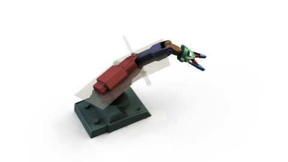
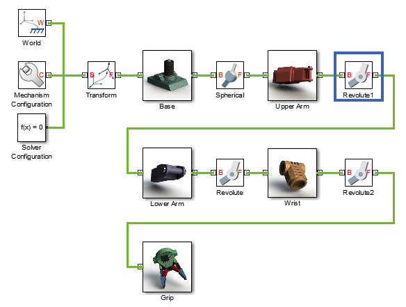
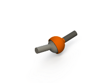

Constraints and Joints
CAD Constraints and Entities
You create a CAD assembly by applying constraints between parts. Each constraint defines a kinematic relationship between constraint entities on the parts it connects. Angle and Centered are examples of constraints. Planes, lines, and points are examples of constraint entities.
Consider the connection between the upper-arm and forearm parts of a robotic-arm assembly. Such a connection allows the two parts to rotate with respect to each other about a single axis and therefore has one rotational degree of freedom. You specify this degree of freedom by applying constraints such as:
One Centered constraint between the cylindrical hinge surfaces of the two parts. This constraint reduces the joint degrees of freedom to two—one translational, along the cylindrical axis, and one rotational, about the same axis.
One Coincident constraint between two planes normal to the cylindrical axis. This constraint removes the translational degree of freedom the Centered constraint provides between the two parts. The combined constraint set allows the parts only to rotate about the common cylindrical axis.
The figure shows the constrained surfaces on the upper-arm and forearm parts.

Simscape™ Multibody™ software can successfully import CAD assemblies that contain these constraints:
Angle Offset
Coincident
Centered

Distance
Parallel
Normal
Simscape Multibody software can successfully import CAD assemblies whose constraints join these constraint entities:
Circle/arc

Cone
Cylinder

Line
Plane

Point

Supported constraints are valid only for certain entity pairs. The table shows the entity pairs compatible with the supported constraints. This table is symmetric with respect to the diagonal row.
Simscape Multibody Joint and Constraint Blocks
Joint and Constraint blocks are the Simscape Multibody equivalent of CAD constraints. They apply between two bodies the kinematic constraints that determine how they can move. A Revolute Joint block is an example. This block removes five degrees of freedom between two bodies, allowing them only to rotate about a common axis.
Consider the connection between the upper-arm and forearm parts of the robotic arm assembly. This connection provides a single rotational degree of freedom and therefore acts as a revolute joint. During CAD import, the constraints between the two parts translate into a Revolute Joint block between two rigid body subsystems. The figure shows this joint block in an imported model.

Joint blocks are assortments of joint primitives, basic yet complete joints of various kinds you cannot decompose any further—at least without losing behavior such as the rotational-translational coupling of the lead screw joint. Joint primitives range in number from zero in the Weld Joint block to six in the Bushing Joint block. There are five joint primitives:
Prismatic — Allows translation along a single standard axis (x, y, or z). Joint blocks can contain up to three prismatic joint primitives, one for each translational DoF. Prismatic primitives are labelled P*, where the asterisk denotes the axis of motion, e.g., Px, Py, or Pz.

Revolute — Allows rotation about a single standard axis (x, y, or z). Joint blocks can contain up to three revolute joint primitives, one for each rotational DoF. Revolute primitives are labelled R*, where the asterisk denotes the axis of motion, e.g., Rx, Ry, or Rz.

Spherical — Allows rotation about any 3-D axis, [x, y, z]. Joint blocks contain no more than one spherical primitive, and never in combination with revolute primitives. Spherical primitives are labelled S.

Lead Screw Primitive — Allows coupled rotation and translation on a standard axis (e.g., z). This primitive converts between rotation at one end and translation at the other. Joint blocks contain no more than one lead screw primitive. Lead screw primitives are labeled LS*, where the asterisk denotes the axis of motion.
Constant Velocity Joint — Allows rotation at constant velocity between intersecting though arbitrarily aligned shafts. Joint blocks contain no more than one constant velocity primitive. Constant velocity primitives are labelled CV.
The table shows the Joint blocks supported during CAD import, the joint primitives the blocks contain, and the degrees of freedom they provide. T and R denote translational and rotational DOFs. Joint blocks not shown are not supported.

By defining the relative degrees of freedom between two bodies, Joint blocks partially determine how these bodies can move with respect to each other. Constraint blocks enable you to impose additional restrictions on their motion. CAD constraints can translate into these Constraint blocks:
CAD Constraint-Simscape Multibody Joint Mapping
The table shows some of the constraint combinations you can use to obtain a specific joint block during CAD import. Different constraint combinations can map into the same joint. This happens if the constraint combinations provide the same degrees of freedom between the parts they join. For a legend of the icons in the table, see CAD Constraints and Entities.
Constraint pairs marked with a note number must satisfy additional requirements. This list outlines those requirements:
Cylinder axes in constraint I must be parallel to planes in constraint II.
Lines in constraint I must be parallel to planes in constraint II.
Planes in constraint I must not be parallel to planes in constraint II.
Lines in constraint I must be perpendicular to planes in constraint II.
CAD Constraint-Simscape Multibody Constraint Mapping
The table shows the Constraint blocks that different constraint combinations map into. Different constraints can map into the same Constraint block if they provide the same degrees of freedom. For a legend of the icons in the table, see CAD Constraints and Entities.
Special Constraint Translation Cases
The lack of constraints between parts, combinations of constraints that fully restrict motion between parts, and unsupported constraints are special translation cases. Here is how Simscape Multibody software handles these cases:
Unsupported constraints between parts translate into rigid connections between rigid bodies. The rigid connections can be in the form of Weld Joint blocks or direct frame connection lines between the rigid bodies. These connections are meant to be temporary. After CAD import, search your model for rigid connections and, if appropriate, replace them with other Joint and Constraint blocks.
Combinations of constraints that fully restrict motion between parts translate into rigid connections between rigid bodies. The rigid connections can be in the form of Weld Joint blocks or direct frame connection lines between the rigid bodies. These rigid connections accurately model the degrees of freedom between the two bodies and do not need to be replaced.
The absence of a constraint between a part and the rest of the assembly translates into a 6-DOF Joint block between a rigid body and the World frame. This joint block provides the rigid body the six degrees of freedom that the CAD part has within the CAD assembly.